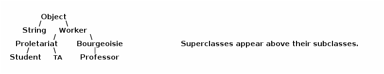

notes10
Table of Contents
Lecture 10
Today's reading: All of Chapter 7, plus pp. 28-33, 250-257.
INHERITANCE
In Lab 3, you modified several methods in the SList class so that a "tail" reference could keep track of the end of the list, thereby speeding up the insertEnd() method.
We could have accomplished the same result without modifying SList–by creating a new class that inherits all the properties of SList, and then changing only the methods that need to change. Let's create a new class called TailList that inherits the fields and methods of the original SList class.
public class TailList extends SList { // The "head" and "size" fields are inherited from SList. private SListNode tail;
This code declares a TailList class that behaves just like the SList class, but has an additional field "tail" not present in the SList class. TailList is said to be a subclass of SList, and SList is the superclass of TailList. A TailList has three fields: head, size, and tail.
A subclass can modify or augment a superclass in at least three ways:
- It can declare new fields.
- It can declare new methods.
- It can override old methods with new implementations.
We've already seen an example of the first. Let's try out the third. The advantage of TailList is that it can perform the insertEnd() method much more quickly than a tail-less SList can. So, let's write a new insertEnd() for TailList, which will override SList's old, slow insertEnd() method.
public void insertEnd(Object obj) { // Your solution to Lab 3 goes here. }
The isEmpty(), length(), nth(), and toString() methods of SList do not need any changes on account of the tail reference. These methods are inherited from SList, and there's no need to rewrite them.
Inheritance and Constructors
What happens when we construct a TailList? Java executes a TailList constructor, as you would expect, but first it executes the code in the SList() constructor. The TailList constructor should initialize fields unique to TailList. It can also modify the work done by SList() if appropriate.
public TailList() { // SList() constructor called automatically; sets size = 0, head = null tail = null; }
The zero-parameter SList() constructor is always called by default, regardless of the parameters passed to the TailList constructor. To change this default behavior, the TailList constructor can explicitly call any constructor for its superclass by using the "super" keyword.
public TailList(int x) { super(x); tail = null; }
The call to "super()" must be the first statement in the constructor. If a constructor has no explicit call to "super", and its (nearest) superclass has no zero-parameter constructor, a compile-time error occurs. There is no way to tell Java not to call a superclass constructor. You have only the power to choose which of the superclass constructors is called.
Invoking Overridden Methods
Sometimes you want to override a method, yet still be able to call the method implemented in the superclass. The following example shows how to do this. Below, we want to reuse the code in SList.insertFront, but we also need to adjust the tail reference.
public void insertFront(Object obj) { super.insertFront(obj); // Insert at the front of the list. if (size == 1) { // If necessary, tail = head; // adjust the tail reference. } } }
Unlike superclass constructor invocations, ordinary superclass method invocations need not be the first statement in a method.
The "protected" Keyword
I lied when I said that we don't need to modify SList. One change is necessary. The "head" and "size" fields in SList must be declared "protected", not "private".
public class SList { protected SListNode head; protected int size; [Method definitions.] }
"protected" is a level of protection somewhere between "public" and "private". A "protected" field is visible to the declaring class and all its subclasses, but not to other classes. "private" fields aren't even visible to the subclasses.
If "head" and "size" are declared private, the method TailList.insertFront can't access them and won't compile. If they're declared protected, insertFront can access them because TailList is a subclass of SList.
When you write an ADT, if you think somebody might someday want to write a subclass of it, declare its vulnerable fields "protected", unless you have a reason for not wanting subclasses to see them. Helper methods often should be declared "protected" as well.
Class Hierarchies
Subclasses can have subclasses. Subclassing is transitive: if Proletariat is a subclass of Worker, and Student is a subclass of Proletariat, then Student is a subclass of Worker. Furthermore, every class is a subclass of the Object class (including Java's built-in classes like String and BufferedReader.) Object is at the top of every class hierarchy.

That's why the "item" field in each listnode is of type Object: it can reference any object of any class. (It can't reference a primitive type, though.)
Dynamic Method Lookup
Here's where inheritance gets interesting. Any TailList can masquerade as an SList. An object of class TailList can be assigned to a variable of type SList–but the reverse is not true. Every TailList is an SList, but not every SList is a TailList. It merits repeating:
!!! Every TailList *IS* an SList. !!! For example:
SList s = new TailList(); // Groovy. TailList t = new SList(); // COMPILE-TIME ERROR.
Memorize the following two definitions.
- Static type: The type of a variable.
- Dynamic type: The class of the object the variable references.
In the code above, the static type of s is SList, and the dynamic type of s is TailList. Henceforth, I will often just say "type" for static type and "class" for dynamic type.
When we invoke an overridden method, Java calls the method for the object's dynamic type, regardless of the variable's static type.
SList s = new TailList(); s.insertEnd(obj); // Calls TailList.insertEnd() s = new SList(); s.insertEnd(obj); // Calls SList.insertEnd()
This is called dynamic method lookup, because Java automatically looks up the right method for a given object at run-time. Why is it interesting?
WHY DYNAMIC METHOD LOOKUP MATTERS (Worth reading and rereading)
Suppose you have a method (in any class) that sorts an SList using only SList method calls (but doesn't construct any SLists). Your method now sorts TailLists too, with no changes.
Suppose you've written a class–let's call it RunLengthEncoding–that uses SLists extensively. By changing the constructors so that they create TailLists instead of SLists, your class immediately realizes the performance improvement that TailLists provide–without changing anything else in the RunLengthEncoding class.
Subtleties of Inheritance
(1) Suppose we write a new method in the TailList class called eatTail(). We can't call eatTail on an SList. We can't even call eatTail on a variable of type SList that references a TailList.
TailList t = new TailList(); t.eatTail(); // Groovy. SList s = new TailList(); // Groovy--every TailList is an SList. s.eatTail(); // COMPILE-TIME ERROR.
Why? Because not every object of class SList has an "eatTail()" method, so Java can't use dynamic method lookup on the variable s.
But if we define eatTail() in SList instead, the statements above compile and run without errors, even if no eatTail() method is defined in class TailList. (TailList inherits eatTail() from SList.)
(2) I pointed out earlier that you can't assign an SList object to a TailList variable. The rules are more complicated when you assign one variable to another.
SList s; TailList t = new TailList(); s = t; // Groovy. t = s; // COMPILE-TIME ERROR. t = (TailList) s; // Groovy. s = new SList(); t = (TailList) s; // RUN-TIME ERROR: ClassCastException.
Why does the compiler reject "t = s", but accept "t = (TailList) s"? It refuses "t = s" because not every SList is a TailList, and it wants you to confirm that you're not making a thoughtless mistake. The cast in the latter statement is your way of reassuring the compiler that you've designed the program to make sure that the SList s will always be a TailList.
If you're wrong, Java will find out when you run the program, and will crash with a "ClassCastException" error message. The error occurs only at run-time because Java cannot tell in advance what class of object s will reference.
Recall that SLists store items of type Object. When they're recovered, they usually have to be cast back to a more specific type before they can be used. Suppose we have a list of Integers. Recall that nth() returns type Object.
int x = t.nth(1).intValue(); // COMPILE-TIME ERROR. int y = ( (Integer) t.nth(1) ).intValue(); // Groovy.
Some methods are defined on every Object, though.
String z = t.nth(1).toString(); // Groovy.
(3) Java has an "instanceof" operator that tells you whether an object is of a specific class. WARNING: The "o" in "instanceof" is not capitalized.
if (s instanceof TailList) { t = (TailList) s; }
This instanceof operation will return false if s is null or doesn't reference a TailList. It returns true if s references a TailList object–even if it's a subclass of TailList.